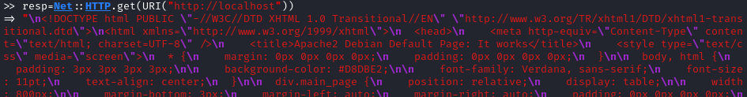
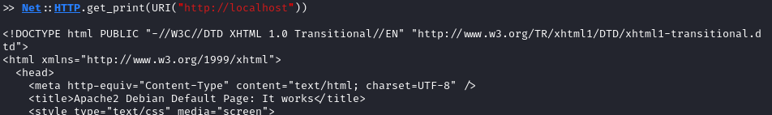
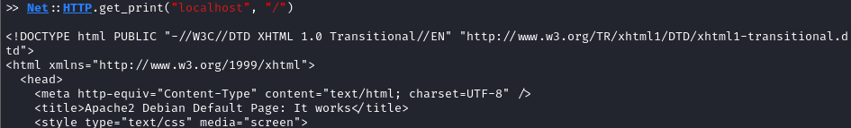
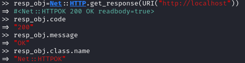
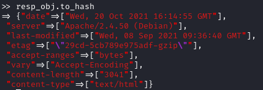
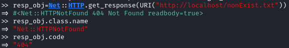
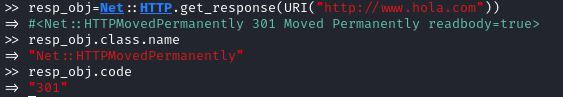
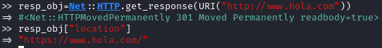

Net::HTTP library
Documentation: https://ruby-doc.org/stdlib-2.1.1/libdoc/net/http/rdoc/Net/HTTP.html
Net::HTTP supports a variety of verbs: get, post, options, head,....
require "net/http"
Net::HTTP.get & Net::HTTP.get_print methods (https://ruby-doc.org/stdlib-2.1.1/libdoc/net/http/rdoc/Net/HTTP.html#method-c-get)
◇ get
Sends a GET request to the target and returns the HTTP response as a string
resp=Net::HTTP.get(URI("http://localhost"))

◇ get_print
Gets the body text from the target and outputs it to $stdout
Net::HTTP.get_print(URI("http://localhost"))

Note: we can avoid using the URI object in favor of the host and the path parameters (note: port is 80 by default)
Net::HTTP.get_print("localhost", "/")

Net::HTTP.get_response
Documentation: https://ruby-doc.org/stdlib-2.1.1/libdoc/net/http/rdoc/Net/HTTPResponse.html
get_response method not return a string as a result. We have an HTTPResponse object that encapsulates the HTTP response (entire response, not only the body).
Status information is easy to retrieve (see below)
resp_obj=Net::HTTP.get_response(URI("http://localhost"))

◇ to_hash: hash of headers in the response

Note that each response status has its own HttpResponse subclass (documentation link)
◇ HTTPOK → 200

◇ HTTPNotFound → 404

◇ HTTPMovedPermanently → 301

▪ location header specify where is been moved the resource:
